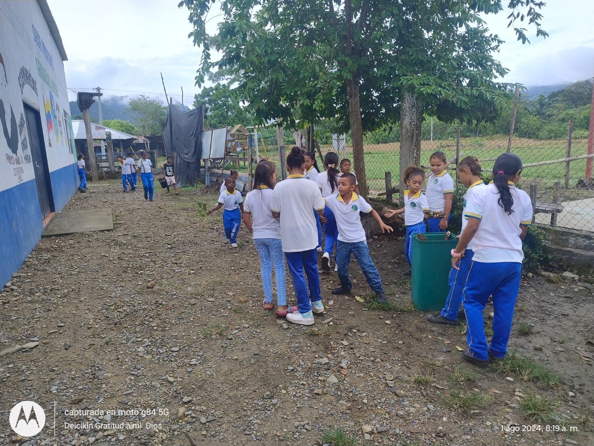
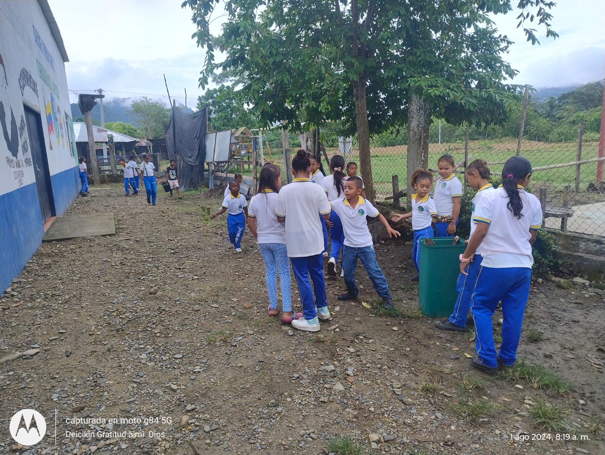

PROYECTO EDUCATIVO AMBIENTAL
"Centinelas Ecológicos del Bajo Cauca Antioqueño-Nechi:
Educación Ambiental para la Acción Comunitaria"
Descripción
El proyecto “Centinelas Ecológicos del Bajo Cauca Antioqueño-Nechí: Educación Ambiental para la Acción Comunitaria” es una iniciativa liderada por la docente Deici Palacios Rentería en la Institución Educativa Rural Trinidad Arriba–Sede Principal. Esta propuesta busca fortalecer la conciencia ambiental de la comunidad educativa a través de actividades como la huerta escolar, jornadas ecológicas y campañas de reforestación. Cuenta con el respaldo de la rectoría, el cuerpo docente, estudiantes, padres de familia y actores locales que se suman al compromiso de cuidar el medio ambiente en un territorio vulnerable como lo es el Bajo Cauca antioqueño.
Huerta Escolar
La huerta escolar se implementó como una estrategia pedagógica y ambiental, diseñada y construida con la participación de los estudiantes, docentes y padres de familia. El proceso inició con la selección y adecuación del terreno dentro de la institución, seguido por jornadas de limpieza, delimitación de espacios y preparación del suelo con abono orgánico y compost elaborado por la comunidad educativa.

Jornada Ecológica
Se realiza jornada de limpieza de fuentes hídricas cercanas, recolección y clasificación de residuos, y siembra de especies nativas. Estas acciones sensibilizan a estudiantes, docentes y familias sobre la urgencia de cuidar el medio ambiente. Además, refuerzan el compromiso comunitario con la sostenibilidad. Las jornadas serán vivenciales, educativas y participativas, generando aprendizajes significativos y transformación ambiental en la zona rural de esta región.
 
